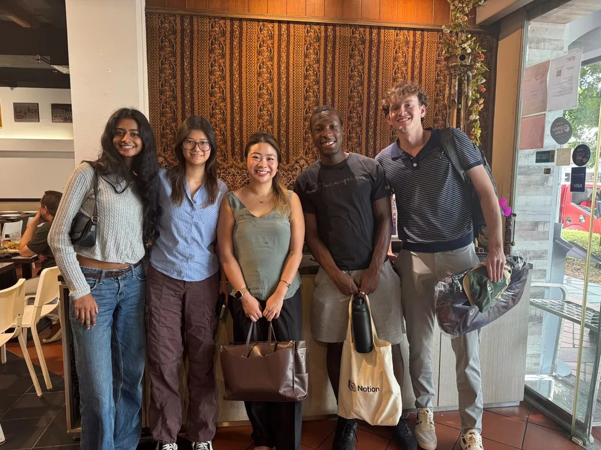

Fuzzy AI · Singapore · Summer 2026
My Internship
01
The Company
- Company
- Fuzzy AI, a B2B SaaS startup
- Role
- Software Engineer Intern
- Dates
- June 2026 to August 2026
- Stack
- TypeScript, React, Linear, PostHog, Claude Code
Fuzzy AI is a B2B SaaS startup that helps automate LinkedIn outreach so sales teams can find and start conversations with potential customers instead of doing it by hand. The company was about seven people including interns, so there was no larger engineering organization to sit inside. I worked directly on the product alongside the other interns and the founders, pulling tickets from Linear and shipping frontend fixes, features, tests, and documentation.
02
My Role and Responsibilities
In the same week I might fix a UI bug, add a feature, and join a customer call. The part of the role I didn't expect was customer contact. I spoke with potential customers and collected product feedback, which meant I saw both ends of the same feature: the code I wrote and the reason someone wanted it. On a team of seven, that combination meant the work I did was visible in the product almost immediately.
I also onboarded and interviewed more than fifteen users and read PostHog usage data to find where people were getting stuck, then turned what I found into prioritized engineering work and owned those changes from proposal through deployment. One example is the reworked onboarding process, which we changed to make the features of the app clearer to new users.

03
The Goals I Set, and How I Met Them
At the start of the program I set four goals using the SMART framework, two for the internship itself and two for the years after it. The common thread was becoming someone who can bridge technology, product, and business rather than sitting on one side of that line.
Short-term goal 1
Build and ship a meaningful product contribution
I wanted to identify a product gap at Fuzzy AI, document a concrete solution, and have the team review and implement it. I met this goal, though not in the shape I originally wrote it. Instead of one large proposal, the contribution came through volume: I shipped over 100 bug fixes and features by the end of the internship, working across the full stack, testing, and documentation. One example is the reworked onboarding process, which we changed to make the features of the app more clear to new users.
Short-term goal 2
Run end-to-end outreach campaigns and develop my sales and marketing instincts
The measure I set was at least five responses from people willing to give feedback on what worked and what didn't. I ended up launching a very successful campaign during our Product Hunt launch, reaching over 60 new users. What I took from it was less about the numbers than the pattern in the feedback. Talking to potential customers directly is what taught me that working code doesn't matter much if it isn't solving the right problem, and that lesson changed how I evaluated my own work for the rest of the internship.
Long-term goal 3
Develop the technical and product depth to build in the AI space
The target is being able to take an AI product idea from concept to working prototype on my own by the time I graduate. The internship moved this forward more than a semester of coursework would have, because I was working inside an AI product and using AI tooling daily rather than reading about either. I'm not at the finish line, but I have a much clearer picture of what these systems are actually made of and which problems they're good at solving.
Long-term goal 4
Develop technical fluency to collaborate effectively with engineers
I set a two-year horizon on this one, with meaningful progress expected by the end of the internship. That progress happened. I read and worked in an unfamiliar codebase, reviewed other interns' pull requests, and contributed to technical discussions without needing anything translated for me.
Looking back at all four goals together, the theme I wrote in my thematic analysis still holds, but the emphasis shifted. I framed the goals expecting to move toward product and growth work with technical fluency as support. The internship reversed that. Engineering turned out to be the part I wanted to be doing, and the product and customer instincts became the thing that makes the engineering better rather than the destination. If I were writing these goals again today, goal 2 would be less about running campaigns and more about staying close to the people using what I build.